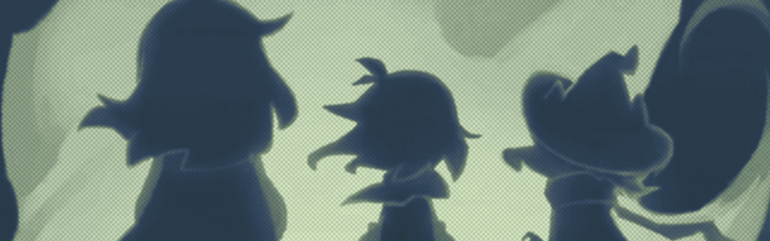
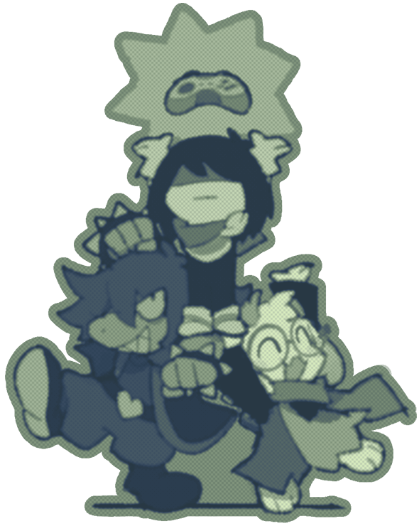
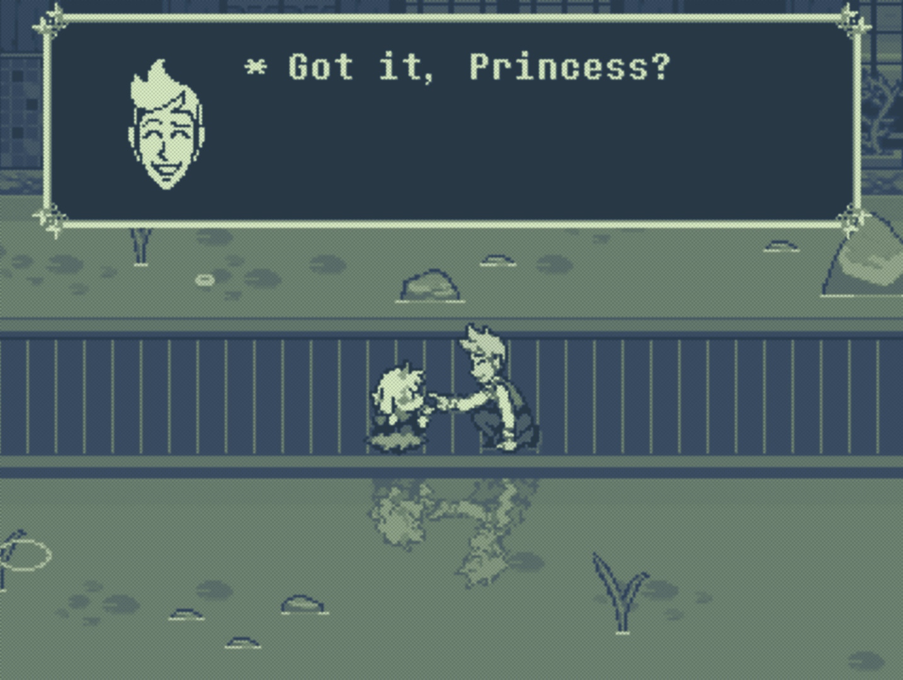
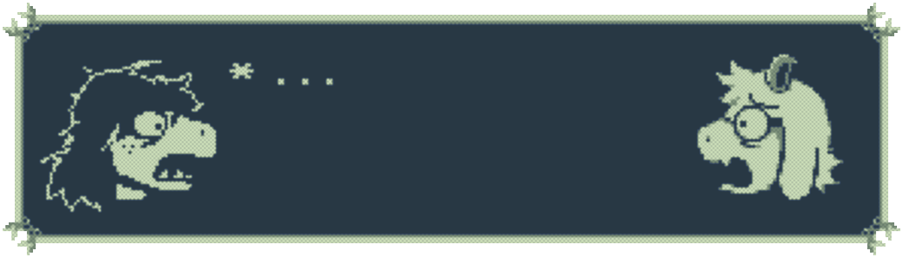

Its the story of Deltarune

People wary of Deltarune spoilers usually avoid all content related to it, so I have left spoilers unmarked for this review. Anyway, most of the discussion is on spoilers so half of this would be redacted if spoilers were marked..
Written 07/07/26
I completed chapter 5 on launch, and I've been sitting with it for quite a while. I spent a week replaying through chapters 3 and 4, I'm working on having a 100% save and a weird route save.
With time, my issues with the chapter have gotten softer, but I do think this was a weaker chapter compared to the previous ones. It's still a wonderful time, but no piece of media can ride a constant high.
Gameplay
The new chapter's gimmick is inspired. The levels doubling as platform segments was very well done. I was impressed when Susie and Ralsei used their abilities on their own, they were very responsive to mistakes I made. Maybe it is simpler than I think (each of them just goes to their nearest interactable, perhaps), but I would still love to see what's going on under the hood.

Deltarune chapters seem to be playing around with Susie and Ralsei acting on their own more and more. The climaxes for chapter's 4 and 5 both feature gameplay segments where they move on their own (and chapter 3 opened with a segement where they moved around somewhat freely). I have been thinking about possible greater implications of :gestures: that, but on a base level it does make them both feel more real.
I like Deltarune's core systems quite a bit, but it is a smart move to introduce new ways to interface with the game. The chapter system certainly works to Deltarune's benefit, but being stretched out like that is sure to make the mechanics grow stale. Introducing platforming and climbing helps to keep the game fresh.
I am interested to see if Deltarune starts to point back inwards to its battle system. It is designed to be constantly new and exciting (since battles always have unique solutions and there are always more bullet patterns and acts to try out) but there is little development to how the system functions on a base level. Besides the high numbers, there isn't much progression or development. I'm fine if things continue as they are, but it could be a cool change up to look back to the battle system.
I liked the secret boss quite a bit, but the main boss was jagged. As will be discussed, Flowery and the flowers did not get enough time to develop, so narratively the battle felt weak, but the mashing mechanic was also a bit faulty.
The Spamton boss fight was also a button mashing fight, but it felt much better than the mashing here. With Spamton, you understood that you were mashing well enough because you saw the bullets, there is no strong indication if you are mashing well enough to get past the blue pillars in Flowery's fight (there is a slight effect on the soul, but it is hard to parse during gameplay). I could not tell if I was playing poorly or if my inputs were not being read well, but even when mashing at a consistent pace, it felt arbitrary if I was going to take damage from the blue pillars or not.
Location
Chapter 2 was about how the internet can be used as a means of escape. Chapter 3 was also about escapism and fiction (now in terms of television and games), but it connected the dying medium to Kris's troubled and changing family life. Chapter 4 leaned more on the location of the fountain for its theme (all of these are, but they also have their metaphor backings), but religion could be viewed as a form of escape itself and was a good backdrop as Deltarune shifted to talking about its inner mythos.
Chapter 5 is garden themed somewhat, but it's also Japan themed. The above has partially been my interpretations, but even if we strip away any deeper thought, the dark world themes make sense. The computer lab is a cyber world, the living room with couches and a TV is TV land, the church is a dark sprawling building covered in murals. We are left with chapter 5 feeling out of place and indulgent.
If we were to sit down and look for a deeper theme, it could be said that the use of eastern aesthetics is trying to get across the feeling about being an outsider, but this only works from the perspective of the flowers and, as we will discuss, they fall flat. Asgore does not have many ties to Japanese culture, besides minor moments with Alphys, but there is an emphasis on minor. Any justification will have to be done after the fact, which is uneasy ground. Post chapter 1 1, all of the chapters are incredibly solid in their aesthetics and purpose; the lack of cohesion here is striking.
Deltarune is about fiction and video games, and it was very inspired by Japanese video games. The dark world theme can be reframed as another introspection on video games and how we interact with them. It also offers a unique perspective on this concept because chapter 5 is about appreciation for what makes Deltarune possible. This framework is also shaky, though, as outside of PC-98 dating sim and Touhou references, the chapter seems more interested in Japanese culture overall, rather than focusing on games specifically. On a base level, all of these possible interpretations do not gel with the dark world source; what does any of this have to do with Asgore?
Sometimes the aesthetics worked, and oftentimes they looked beautiful, but given that Deltarune usually applies an extreme amount of detail and logic to its dark worlds, the pretty wrapping barely supports the structure.
The Flowers
Forcing seven characters into this chapter to acknowledge Undertale does not benefit Deltarune. Even the secret boss has a repeated Undertale arc, and much of Asgore's characterization is supported by the fact that Undertale exists, and many of us experienced it.
Not to go to the apple store and get mad at all the apples, but I never much care for overwhelming Undertale references in Deltarune. Small moments can be fun, but I like when Deltarune exists on it's own.
There are too many characters to develop any successfully. Asgore and Flowery are the most paramount, but they get shoved aside for one-note characters. The flowers' writing feels like Fox at his weakest, and that is deeply unfortunate.
I do not hate any of them, and I feel terrible calling them one-note, but none of them stuck the landing for me. At most they are cute, but that sounds dismissive. They are meant to be different because they are not human or monster, but the designs made them feel very out of place, even compared to Flowery. I get why Flowery has the most effort put into his design and writing, but he makes the others seem less by comparison, all while not having much to work with himself.
Many have pointed out that the flowers make this chapter feel like a fan game, and I do agree. That word does have negative connotations, and this phrase is being used to describe the flower's writing and designs, but I see a positive end to this comparison as well.
Deltarune is about player and media relationships. The handling of these themes have lead to diagetic conflicts between Kris, the player, and Deltarune. Leaning on the existence of Undertale, and adopting fan-like interpretations of Undertale's background characters whose characteristics were developed in fandom spaces, helps calm tensions between the player and Deltarune. Chapter 5 is the final, relatively, low-stakes journey before the end; tensions have to be eased between all parties interfacing in the story.
Asgore
Asgore has a level of focus placed on him that has been unseen in other chapters2, this especially stands out because Asgore is not a main character, but this exploration is shallow and intentionally held back.
The true intentions of the chapter may be to have the heroes look inwards and question their own perspectives, but there is room for that to happen and for Asgore to have a bit more to him.
Chapter 5 prioritizes how Asgore's drive to prove himself overcomes his attempts to truly be there for his family. This deviation helps distinguish him from someone like Tenna, who is desperate for the past. Asgore is desperate (see Toriel harassment), but there is an undercurrent of ego. Asgore wants to fix his image. I'm sure he cares about his family as well, but he is a textbook example of a father clouded by how things "should be".
Guilt is another strong attribute for Asgore, but outside of parallels with Yellow, this guilt is not as present as it could have been because Deltarune is not ready to talk about Dess. Nothing had to be fully explained; Deltarune could keep leading the player on with small clues. Asgore can pantomime guilt and tragedy, but this only goes so far without context. Actually, a lack of context can make guilt and denial come across even stronger, but Deltarune barely offers vague references.
I am not interested in Deltarune theories 3; I came into Chapter 5 with completely fair expectations. The issue is not that Chapter 5 did not deliver on fans' expectations for mystery; the issue is that chapter 5 has little to discuss with itself when all answers are being saved for the final chapters. Even in the ending where it is finally time to face what has happened and talk about his shattered family, Asgore's reflections and hunger are muted because he cannot say too much.
The flowers are apparent analogies for Asgore's family, which I like, but I wish there was a bit more direct reflection. At most, Flowery serves as a lesson for Asgore to leave Toriel alone 4, but there is little substance outside of that. Asgore's flaws become apparent as we see him shape new family only to once again abandon them, but the interactions between Asgore and the flowers, besides Flowery, are very muted. I'm sure with time we will realize there was more foreshadowing with the flowers than we realized, but even if so the they did not reveal anything new to me about the Dreemurr family.
I find it very hard to word what I think the shortcomings with Asgore's arc are because the elements all make sense they just don't slot cleanly together. Asgore is a patriarchial figure who has been set down a path burdened by guilt and self righteousness that will only harm those around him, much like his character in Undertale. Chapter 5 communicates these concepts, but the distance between the player and Asgore is much too far to watch him actively develop. Asgore did not process his relationship with his family throughout the chapter, he had a realization just in time for a sweet ending. All his words to Kris rang unfortunately hollow to me.
Flowery
I do have positives to say on Flowery, but to condense what has been said throughout the previous sections: the high character count does not give Flowery time to develop and fill all of the roles designed for him. Critically and most successfully, Flowery parallels Ralsei, but the Asgore and Rudy parallels fall flat.
Flowery works well as a vehicle for reflection. Deltarune questions the rules and motions of video games, and Chapter 5 turns these questions back onto the main characters
Chapter 5 perfectly mirrors chapter 1 with Flowery as a guide and Asgore a newcomer. Asgore is not lost or trapped, he is using the dark world to his benefit like Kris and Susie. He is not Kris and Susie though, so the party insists that he must leave so the fountain may be closed. The entire chapter set up exists so Flowery can question the party and their priorities. Questioning the ethics of Castle Town was a highlight of the chapter, but it could be argued that the stipulation that the flowers, for whatever reason, must die, is a forced dilemma. Anywhere else this would be more of a fault, but Castle Town is not a question on ethics of who should live or die, it is about attachment and being allowed to live in fantasy.
In any case, this chapter is obvious set up for future conflicts revloving around Castle Town and Susie's increasing dependancy on it.
Flowery may not uphold Asgore's arc well, but he greatly fleshes out Ralsei. Having a character that is both an adversary and an ally is a hard line to follow, but Flowery is able to succeed because his goal can be fulfilled by anyone. He just wants to see people try and defy the fate laid out in front of them. It is great to see Ralsei internalize this and take the first steps towards having hope.
Drawing a parallel between the prophecy and assigned gender is a natural fit. The prophecy can be changed, because Ralsei does not have to be a prince. Unless the prophecy is operating on an unimaginable level, it cannot go into Ralsei's head and warp their own perception of themselves. Maybe the prophecy does work on a level where people can be fully rewritten at its whims, but from everything we have seen, I imagine it's more like a branching path that always reaches the same endpoint. There is no way to redirect Ralsei back to where they were meant to go 5.

Wrapping Up
I would like to emphasize that I do not hate the chapter; it is one of the best games I have played this year. Deltarune is just something I care deeply about, so I view it on a very analytical level. I like the chapter more and more as time passes, but I cannot ignore the rough edges. I think chapter 5 is just in an awkward position. Chapters 3 and 4 were stellar, and chapters 6 and 7 are beyond my imagination.
The chapter highlights, to me, were the festival segement (both routes, of course), the platforming, and Susie/Ralsei/Noelle/Kris. I did not comment on the weird route much because what is there to say! Extremely haunting.
My favorite songs from the new OST would be:
I've heard some people hypothesize that this chapter may have been viewed more favorably if it came out with chapters 3 and 4 like it was intended. Having just replayed chapters 3 and 4, I have to disagree. Chapter 3 is closer in tone to chapter 5, but it's honestly a better execution of chapter 5's ideas. Putting them next to each other dulls chapter 5.
I said earlier that I don't want the tone to change, I stick by that fully. Chapter 5 was a treat; I would not change the festival segment for the world. I can't deny, though, that chapter 4 ends in an incredibly tense manner, and that creates a dissonance between the chapters. I wonder how perceptions on chapter 5 will develop, especially once Deltarune is complete, and people play it as one finished product.

Credits
All in game screenshots not credited were screenshots from my playthrough.
Notes
1 I excluded chapter 1 because chapter 1 feels like a test run. It's a perfectly fine chapter, but it's missing the details that make the other chapters great.
2 I've heard some comment that Asgore did not need to be focused on because Chapter 5 is similar to Chapter 3, and Chapter 3 did not focus on Toriel. This line of logic is blatantly ignoring how Chapters 3 and 5 are structured. Toriel is not awake during Chapter 3, and much of the discussion applies more so to Kris and their fractured family. Asgore is very much present during Chapter 5, and the dark world is directly reflective of his own life.
3 I had not watched any theories at the time of playing. I actually have recently, and they made me understand and appreciate the game more. I think if you... just have standards... you will find many interesting pieces out there that are more Deltarune analysis than direct theory. Blaming all critical reception on theories is unfair, especially given that Deltarune is an episodic mystery game. There is always a level that's too far, but Deltarune's theory culture did not appear out of thin air.
4 I really appreciated that the game took the time to directly call out that Asgore is weird to Toriel. I have standards for Deltarune, I knew that it wouldn't just laugh off how Asgore treats Toriel, but up to this point it's felt like their interactions have mainly been for laughs. This is all a really minor and I only care because I think people are insane and uncharitable about Toriel.
5 Another way to view this would be that Ralsei was never meant to be the prince and that role will just be fulfilled by someone else, but at this moment I do not think that is the angle that Deltarune is going for. Ralsei's purpose as a character is to understand what is going on, if Ralsei said they were the prince, and they were actually mistaken, I'd argue that the prophecy somehow changed who the prince was out of spite. If that were the case, the prophecy would be better viewed as a mad lib book where characters and traits are swapped out the minute someone does not fit their role, and that is not a forced deterministic framework.